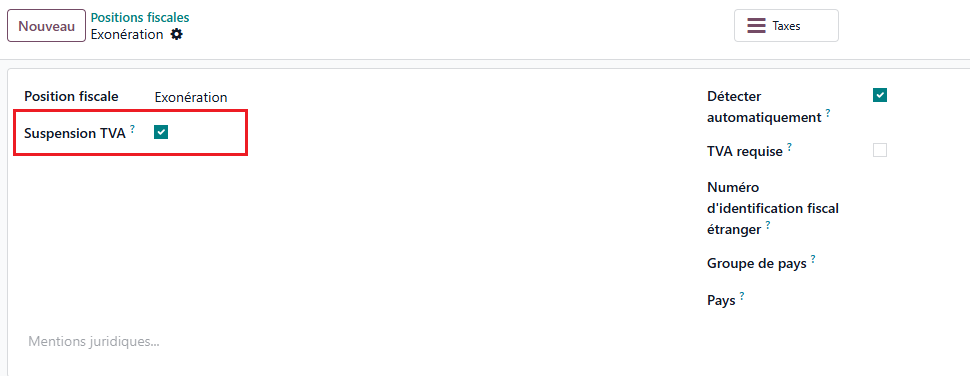
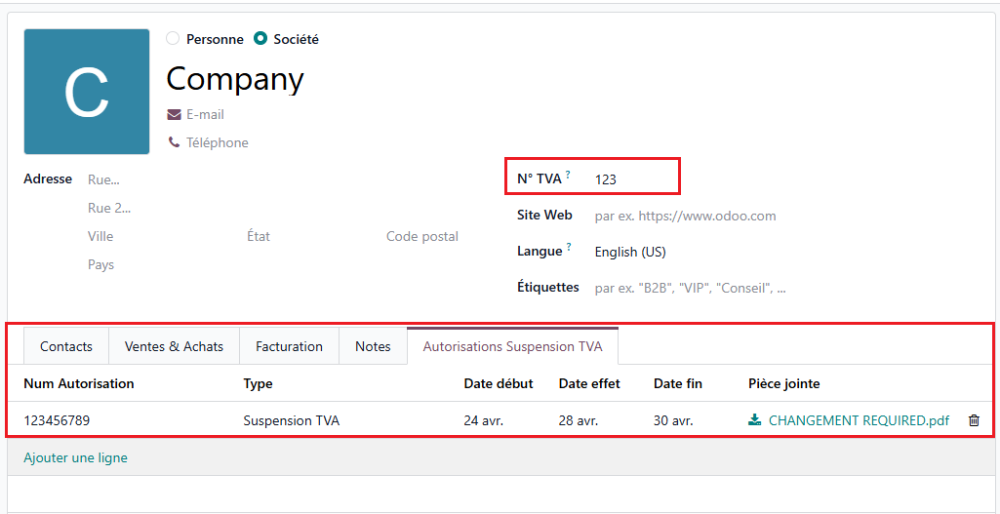
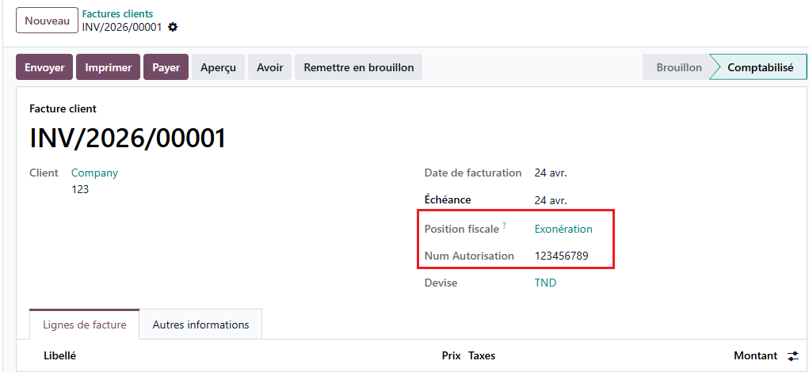
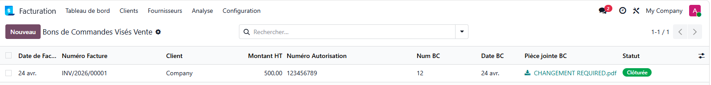
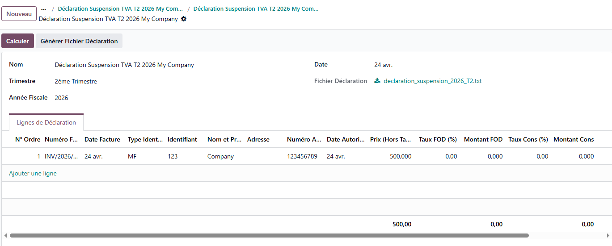

This module allows you to manage the VAT suspension regime on your customer invoices directly in Odoo. It centralizes customer authorizations, automatically generates the associated stamped purchase orders (bons de commandes visés), and produces the quarterly suspension declaration on sales, ready to be transmitted to the tax administration.
This module is compliant with Tunisian tax regulations and follows the local accounting standards in force.
Developed by Digi-IT
In Accounting > Fiscal Positions, open the relevant fiscal position and enable Suspension TVA.
Any customer invoice assigned to this fiscal position will automatically be flagged as being under the VAT suspension regime and will generate a stamped customer order record.

On the customer form, a dedicated Autorisations Suspension TVA section lets you register each authorization: unique number, type (Suspension TVA or Suspension TVA et FODEC), validity dates and official attachment.
Authorizations are then available on customer invoices and stamped customer orders, filtered automatically by partner.

Create a customer invoice and set a fiscal position with Suspension TVA enabled. The invoice automatically exposes the Num Autorisation field, filtered to the customer's own authorizations.
On creation, the module silently generates the matching Bon de Commande Visé record in the background.

Under Accounting > Customers > Bons de Commandes Visés Vente, each record displays the linked customer invoice, customer, amount and fiscal position. Fill in the customer order number, order date and attached document to complete the file.
The status switches automatically from En cours to Clôturée once all three fields are provided.

Under Accounting > Customers > Déclarations Suspension sur CA, create a declaration, pick the quarter and fiscal year, then click Calculer: every eligible stamped customer order of the period is pulled into the declaration lines.
Click Générer le fichier to produce the official text file (header, detail and totals lines) ready to be submitted to the tax administration.

Before first use:
1. Enable Suspension TVA on the relevant fiscal position(s).
2. Register your customers' authorizations on their partner form (number, type, dates, attachment).
3. Create customer invoices with a Suspension TVA fiscal position - stamped customer orders are generated automatically.
4. At the end of each quarter, create a declaration, compute the lines and export the official file.
Odoo 19.0
For any support, contact us:
contact@digi-it.com.tn